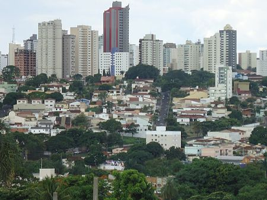

Uberlândia é um município brasileiro do interior do estado de Minas Gerais, Região Sudeste do país. Localiza-se a oeste da capital do estado, Belo Horizonte, distanciando-se desta cerca de 537 quilômetros.[8][9] Sua população, segundo estimativas do Instituto Brasileiro de Geografia e Estatística (IBGE), era de 691 305 habitantes em 2019, sendo o município mais populoso da região do Triângulo Mineiro e o segundo mais populoso de Minas Gerais.[10] É, também, o município mais populoso do interior de Minas e o quarto município mais populoso do interior do Brasil.[11] Ocupa uma área de 4,1 mil quilômetros quadrados, sendo que 135,3 quilômetros quadrados estão em perímetro urbano. [12]

A sede tem uma temperatura média anual de 22,3 graus centígrados. Na vegetação do município, predomina o cerrado. Em relação à frota automobilística, em 2013 foram contabilizados 390 979 veículos.[13] Com uma taxa de urbanização da ordem de 97,56 por cento, o município contava, em 2008, com 198 estabelecimentos de saúde. O seu Índice de Desenvolvimento Humano (IDH), segundo dados de 2010, é de 0,789,[14] considerado "alto" pela Organização das Nações Unidas, sendo o terceiro município com melhor IDH do estado e o 71° do Brasil, estando, inclusive, acima tanto da média estadual quanto nacional, que foram calculadas no mesmo ano como de 0,731 e 0,699, respectivamente.[15]
A cidade de Uberlândia foi emancipada de Uberaba no final da década de 1880. Sua denominação atual foi introduzida pela Lei Estadual 1 128, de 19 de outubro de 1929.[16] É também a principal e maior cidade do Triângulo Mineiro. Conta ainda com localização geográfica privilegiada, já que, com a sua malha rodoviária, está ligada aos grandes centros nacionais, como São Paulo, Rio de Janeiro, Belo Horizonte, Goiânia e Brasília. Os maiores centros econômicos do Brasil contam com Uberlândia como ponto de ligação.[17]
O município conta ainda com uma importante tradição cultural, que vai desde o seu artesanato até o teatro, a música e o esporte. Seu principal e mais tradicional clube de futebol é o Uberlândia Esporte Clube, fundado em novembro de 1922.[18] Uberlândia também é destaque no turismo, com seus diversos atrativos culturais, naturais e arquitetônicos. Alguns dos principais são o Mercado Municipal,[19] o Parque do Sabiá,[20] Parque Municipal Victorio Siquierolli, Praça Clarimundo Carneiro, Praça Tubal Vilela, Praça da Bicota/Rosário[21] e a famosa Avenida Rondon Pacheco.[22] Um dos principais eventos é o carnaval de Uberlândia, que, além de bailes de clubes, conta ainda com a participação de quatro escolas de samba e blocos que realizam um carnaval de rua na cidade.[23] Outro fato importante a ser destacado na cultura é o recente recorde mundial de violeiros alcançado pelo município em 28 de outubro de 2017 na Arena Sabiazinho, com a presença de 674 violeiros tocando ao mesmo tempo, reafirmando uma tradição na música sertaneja herdada por grandes nomes.[24] O município possui destaque também no turismo de negócio em escala nacional.[25]
O primeiro homem de origem europeia a pisar na região do atual município de Uberlândia, território até então habitado por índios caiapós e bororós[carece de fontes], foi o bandeirante Bartolomeu Bueno da Silva, em 1632. A região, então pertencente à Capitania de São Vicente, passou a pertencer à Capitania de Minas Gerais e São Paulo por Carta Régia de 3 de novembro de 1709. João Pereira da Rocha (1818), após o desbravamento da região pelos bandeirantes, fixou-se pela região, demarcando área próxima à Aldeia de Santana (atual Indianópolis). Ali, ele instalou a sede da sesmaria, que denominou Fazenda São Francisco, dando origem ao município. Demarcou, ainda, a Fazenda Letreiro e a do Salto e deu o nome de Ribeirão São Pedro a um curso d'água encontrado.[27] A vinda de João Pereira atraiu muitas outras famílias, inclusive os Carrejos, que, em 1835, adquiriram parte da Fazenda São Francisco e de outras próximas, formando as sedes nas quais se instalaram aqueles irmãos: Olhos d'Água, Lage, Marimbondo e Tenda (a de Felisberto). Felisberto Alves Carrijo que, em 1964, foi legalmente reconhecido como fundador da cidade, era professor com formação adquirida em colégios de missionários. Instalou em sua casa a primeira escola do município e, aos domingos, rezava o terço. Formou um povoado, sendo este, em seguida, denominado como Nossa Senhora do Carmo em homenagem à capela de mesmo nome, inaugurada em 20 de outubro de 1853.[28][29]
Em 11 de junho de 1857, foram incorporadas, ao patrimônio do povoado, mais doze alqueires doados pela esposa de Luís Alves Pereira, Custódia Fernandes dos Santos e outros cidadãos. Essa área já era habitada por escravos e deu origem ao Bairro Patrimônio, na zona sul, pela Lei Provincial nº 831. Exatamente um mês mais tarde, foi criada a Freguesia de São Pedro de Uberabinha. Em 1861, a Capela de Nossa Senhora do Carmo foi ampliada, tornando-se a Igreja Matriz de Nossa Senhora do Carmo de São Pedro de Uberabinha, que viria a ser demolida em 1943.[29]
Através do Decreto nº 51, de 7 de junho de 1888, as freguesias de Santa Maria e São Pedro de Uberabinha foram elevadas à categoria de vila. Dois meses mais tarde, em 31 de agosto daquele ano, foi criado o município de São Pedro de Uberabinha, atual Uberlândia, emancipando-se de Uberaba, pela Lei Provincial nº 4.643. Ao longo dos anos, houve várias alterações na subdivisão distrital. Nos quadros de apuração do recenseamento geral de 1911, o município era constituído dos distritos de Uberabinha (sede) e Santa Maria. Pela Lei Estadual nº 843, de 7 de setembro de 1923, criou-se o distrito de Martinópolis com terras desmembradas do distrito sede. Pelo Decreto-lei Estadual nº 1.058, de 31 de dezembro de 1943, foram criados distritos de Tapuirama e Cruzeiro dos Peixotos. Sob o mesmo decreto-lei estadual o distrito de Santa Maria passou a denominar-se Miraporanga e Martinópolis a chamar-se Martinésia.[16]
Em 14 de março de 1891, foi instalada a Vila de São Pedro de Uberabinha, além de ocorrer a posse do 1º Conselho da Intendência Municipal. A criação da Comarca de São Pedro de Uberabinha ocorreu pela Lei Onze, de 13 de novembro daquele ano. Em 21 de dezembro, instalou-se o Foro Civil do Termo Judiciário de Uberabinha, Comarca de Araguari. Em 7 de março de 1892, aconteceu a posse da primeira Câmara Municipal de São Pedro de Uberabinha, sendo agente executivo Augusto César Ferreira e Souza. Em 22 de março, ocorreu a primeira sessão do júri, sendo presidente do tribunal Duarte Pimentel de Ulhôa - primeiro juiz de direito da comarca - cargo que exerceu de 1892 até 2 de janeiro de 1928, data de seu falecimento.[29]
Após a emancipação de Uberlândia, houve um grande crescimento da área urbana da cidade. Em 1897, foi instalada a primeira escola secundária do município: o Colégio Uberabinhense. Em 7 de janeiro daquele mesmo ano teve início a circulação da folha "A Reforma", o primeiro Jornal da cidade, sendo seu fundador e diretor proprietário o professor João Luiz da Silva.[30] No início do século XX, a cidade já possuía uma diversificação nos ramos industriais, tais como: fábrica de cerveja, sapataria, fábrica de cigarros, ferreiro, marceneiro, selaria, etc. Além dessas indústrias não muito complexas, cuja produção se caracterizava pela fabricação de utensílios domésticos, materiais para construção civil, ferramentas agrícolas, aparatos para montaria etc., existia a indústria agropastoril, que, apesar de rudimentar, foi regulamentada pelo Código de Posturas. A indústria pastoril movimentava-se em torno da criação do gado bovino para consumo interno e criação de suínos para o consumo e exportação para outros municípios e estados.[31]
Nas ruas e avenidas sem pavimentação, trafegavam carroças, charretes e carros de boi, cujo tráfego era regulamentado por legislação. Essa lei regulamentava o emplacamento dos carros, a lotação de passageiros permitida em cada charrete, o valor de cada corrida e prescrevia os cuidados que deveriam ser dispensados no trato com os animais. Além das carroças e charretes, os carros de boi foram um dos mais relevantes e requisitados meios de transporte. Nem com a chegada da Estrada de Ferro Mogiana em Uberabinha, no ano de 1895, esses meios perderam a sua importância, pois o comércio entre essa cidade e os locais por onde não passavam os trilhos de ferro, era realizado o transporte das mercadorias via carros de boi. Para as compras de poucas mercadorias, visitas e em muitas outras atividades, o cavalo era utilizado como meio de transporte.[31]
Até o ano de 1908, as atividades sociais da população se baseavam nas comemorações religiosas e também dos sacramentos, como ir à missa aos domingos, participar dos batizados, casamentos, organizar e frequentar as quermesses, que ajudavam a botar os fiéis em dia com os seus deveres religiosos e para estreitar o convívio. Também ocorriam apresentações de bandas de músicas aos domingos. Além dessas atividades, parte da população se divertia também realizando e participando de concursos de beleza. Existiam também casas de jogos, que eram chamadas de casas de tavolagem, também considerados espaços de interação.[31]
A área do município é de 4.115,82 km², representando 0,7017 % do estado, 0,4452 % da Região Sudeste e 0,0484 % de todo o território brasileiro.[34] Desse total 135,3492 km² estão em perímetro urbano.[12]
Uberlândia tem a altitude média de 887 m. O ponto culminante do município está localizado na cabeceira do Córrego Cachoeirinha, que mede 930 m. A altitude mínima se encontra na foz do Rio Uberabinha, com 622 m. A sede municipal se encontra em altitude de 863,18 m.[35] O município de Uberlândia está situado no domínio dos Planaltos e Chapadas da Bacia Sedimentar do Paraná, estando inserido na sub-unidade do Planalto Meridional da Bacia do Paraná. Possui relevo típico de chapada (suavemente ondulado sobre formações sedimentares, apresentando vales espaçados e raros). Nesse conjunto a vegetação característica é o cerrado e suas variáveis. Os solos são ácidos e pouco férteis.[36] Cerca de 70% do território uberlandense é de terras onduladas e nos 30% restantes o terreno é planificado.[35]
Uberlândia está localizada junto à bacia do rio Paranaíba, tendo em seu território várias sub-bacias de pequenos e médios córregos com papéis importantes em sua configuração.[35] É drenado pela bacia hidrográfica do Rio Tejuco (o segundo maior afluente do rio Paranaíba), com sua bacia a sul e sudoeste do município, que possui como principais afluentes os Ribeirões Babilônia, Douradinho e Estiva, o Rio Cabaçal, estes localizados na zona rural, e o Rio Araguari. A bacia do Araguari abrange a porção leste do município. Seu principal afluente, na área do município, é o rio Uberabinha, que passa dentro do perímetro urbano. Há exploração do potencial hidrelétrico desse rio, a qual vêm ocorrendo através do funcionamento das usinas hidroelétricas de Nova Ponte, de Miranda e Amador Aguiar I e II.[36]
O Rio Uberabinha, integrante da bacia do Rio Araguari, possui grande relevância para a cidade, constituindo-se em conjunto com seus afluentes, no manancial usado para o abastecimento de água para a população. Os principais afluentes do Araguari estão na zona rural, que são os Ribeirões Beija-Flor, Rio das Pedras e o Ribeirão Bom Jardim, outro importante manancial para o abastecimento do município. Na zona urbana o Rio Uberabinha tem afluentes menores, como os córregos Cajubá, Tabocas, São Pedro (totalmente canalizados), Vinhedo, Lagoinha, Liso, do Salto, Guaribas, Bons Olhos, do Óleo, Cavalo, dentre outros.[36]
O clima de Uberlândia é caracterizado como tropical,[37] com diminuição de chuvas no inverno e temperatura média compensada anual em torno de 22 °C.[38] Outono e primavera são estações de transição.[39] O índice pluviométrico é pouco superior a 1 600 milímetros (mm), concentrando-se nos meses de verão.[38] As precipitações caem sob a forma de chuva, podendo em algumas ocasiões ocorrer granizo.[40][41] Por outro lado, na estação seca é comum o município registrar índices de umidade relativa do ar críticos, algumas vezes abaixo de 20%, sendo que abaixo de 30% já é considerado estado de atenção.[39]
Segundo dados do Instituto Nacional de Meteorologia (INMET), referentes ao período de 1980 a 2006, a menor temperatura registrada em Uberlândia foi de 1 °C em 21 de julho de 1981,[42] e a maior atingiu 37,4 °C em três ocasiões, a primeira em 14 de outubro de 1997 e as demais em outubro de 2002, nos dias 12 e 14.[43] O maior acumulado de precipitação em 24 horas atingiu 157,8 mm em 12 de dezembro de 1986. Outros grandes acumulados foram 129,8 mm em 9 de novembro de 1999, 126,8 mm em 19 de janeiro de 1983, 106,2 mm em 15 de janeiro de 2002 e 105,8 mm em 1° de dezembro de 1980.[44]